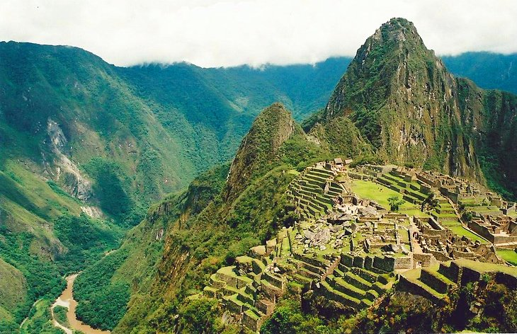
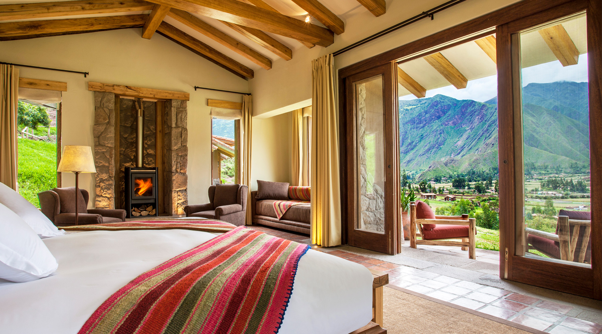
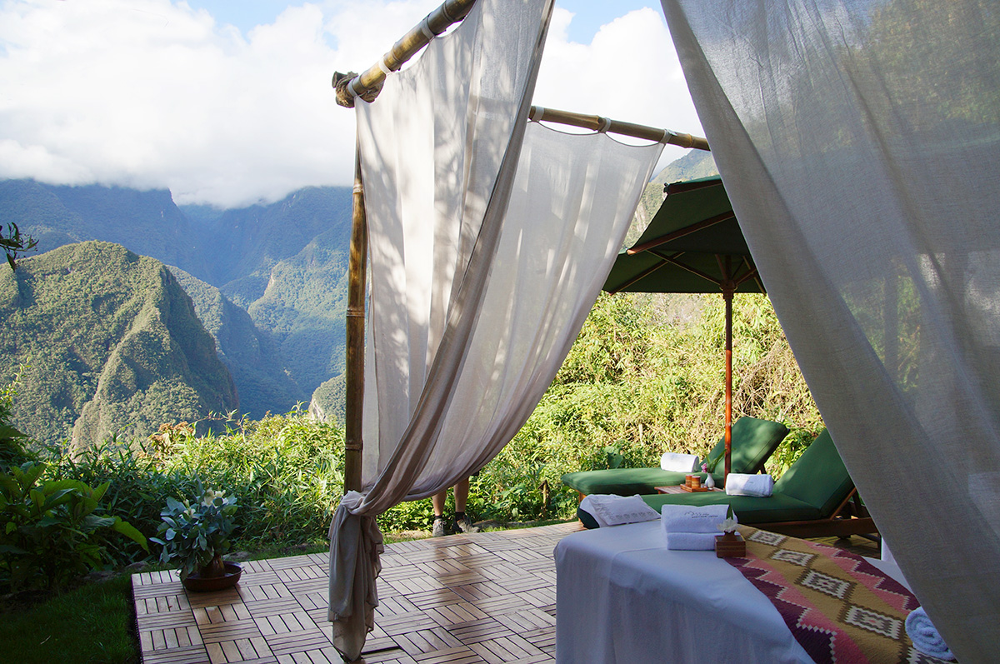

<<<<<<< HEAD
Accomodation
=======
Peru
>>>>>>> d2f9801e4ca7bbe9dbeabbf9865e2abb8218f779
PERU
Intro
About Peru
Travel experts
Accommodations
Get Started
Travel to Peru is a rich cultural experience. For many reasons, a Peru vacation tops the bucket lists of many of the world’s most intrepid travelers. Between the wildlife and nature-viewing available in the nation’s jungles, the unique sites in the Andes Mountains, there are many experiences travelers can only have while on a trip to Peru.

.
As one writer put it: “If Peru didn’t exist, travel guide books would have to invent it.” Travel to Peru can also provide a window to its unique wildlife and intriguing jungles, perhaps best explored on an Amazon River cruise in the comfort of a small luxury river boat.
Peru is a country in South America that's home to a section of Amazon rainforest and Machu Picchu, an ancient Incan city high in the Andes mountains. The region around Machu Picchu, including the Sacred Valley, Inca Trail and colonial city of Cusco
Peru river cruises are available on the major waterways of the Amazon. Limited rail service is available between the country’s major cities and along the populated shore of Lake Titicaca, but bus or air travel is recommended for reaching other destinations inland.
One could theoretically go from the relatively mild climate of the Southern Peruvian Coast to the harsh extreme of the frozen heights of the Andes, before descending into the sultry heat of the Amazon Basin, and all in one day. Because of this, the weather in Peru is extremely diverse.
Hands down, eating in Peru only enriches your trip. Of the top ten world's best restaurants, Lima is the only city with multiple winners. Ceviche here is with red onion and aji pepper, and choclo, a white Andean corn.


.
Resorts & Hotels in Peru
The major cities of Peru all have a wide range of accommodations, from modest to five-star luxury hotels. In the more rural parts of Peru, finding luxury accommodations can be challenging. A few of our select hotels include:
.
CUSCO
Machu Picchu Pueblo Hotel
A tropical garden retreat in the cloud forest of the Machu Picchu Historical Reserve.
LIMA
Belmond Miraflores Park
Personalized service, exceptional dining and indulgent facilities.
PUNO
Titilaka
A boutique lodge on a private peninsula on Lake Titicaca.